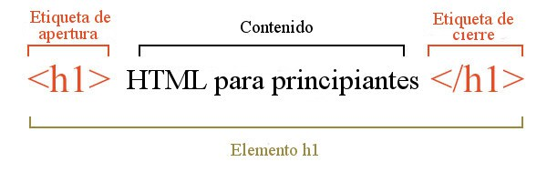

Terminos
HTML:
Es el acronimo para "Hyper Text Markup Language" que es el lenguaje estandar para la
creacion de paginas web,
este describe la estructura de una pagina web tales como esta u otras paginas en la red.

Etiqueta:
Es cualquier palabra que se encuentre entre los simbolos <>, existen etiquetas especificas para cada cosa que se pueda intentar hacer sin embargo se pueden modificar sus propiedades para lo que sea que este entre la etiqueta de inicio y finalización se muestre de diferentes maneras
Contenido:
Es cualquier texto o contenido que se encuentre entre dos etiquetas

HTML5:
Es la ultima version de HTML y la que se usa actualmente

CSS:
Es usado para darle forma a la pagina web, se pueden controlar fuentes, colores, espaciado entre elementos etc.

Servidor web:
Un servidor web, tambien conocido como servidor http, son servidores usados para la distribucion de contenido web en las redes, este se encarga de distribuir documentos a los clientes un ejemplo de esto puede ser una pagina web entregandole el contenido al explorador.
Cliente web:
Es el destinatario del servidor, o aquel que solicita informacion o algun tipo de servicio al servidor. por lo general la mayoria de clientes son aplicaciones simples que acceden a servicios a traves de un servidor. Los clientes se pueden conectar a los servidores con un socket de dominio, memoria compartida o a traves de protocolos de internet.
Aplicaciones sincronas:
Una aplicacion sincrona es un modelo de los inicios de internet, en donde las comunicacion se basaban en un modelo cliente-servidor, en este modelo el cliente realizaba una consulta al servidor y este respondia con dicha peticion
Aplicaciones asincronas:
Estas permiten la notificacion a un cliente cuando ocurre un evento en el servidor, por ejemplo la actualizacion de precios de una tienda. Esto permite que este tipo de aplicaciones actualicen su informacion de manera mas eficiente.
Aplicaciones en tiempo real:
Es el destinatario del servidor, o aquel que solicita informacion o algun tipo de
servicio al servidor. por lo general la mayoria de clientes son aplicaciones simples que acceden
a servicios a traves de un servidor. Los clientes se pueden conectar a los servidores con un
socket de dominio, memoria compartida o a traves de protocolos de internet.
Este tipo de aplicaciones son por lo general chats, juegos, notificaciones, etc.
algunas de las herramientas o frameworks que se pueden usar para desarrollar aplicaciones en tiempo real
compatibles con los dispositivos mobiles son los siguentes:
- Meteor
- Node
Un caso en el que se pueden usar las aplicaciones en tiempo real es en los trabajos remotos en donde la comunicacion y la interacción son de suma importancia para saber que es lo que esta pasando por ejemplo cuando se estan diagnosticando problemas de red o problemas en una computadora.
Websocket:
Es una tecnologia que hace posible abrir una sesion de comunicacion interactiva
entre un servidor y el usuario. Con los Websockets se pueden enviar mensajes a un servidor y
recibir respuestas controladas por eventos sin la necesidad de consultar al servidor por una
respuesta.
El Websocket es la interfaz principal para conectarse a un servidor Websocket y enviar y recibir datos
a traves de la conexion.
Se tienen 2 eventos que desencadena un Websocket: CloseEvent y MessageEvent.
El CloseEvent es un evento para cuando se cierra la conexion mientras que el MessageEvent es
cuando se recibe un mensaje enviado desde el servidor.
Los navegadores que soportan los websocket son los siguientes: chrome, firefox e internet explorer
Algunos de las API de Websockets, servidores y cientes de websockets son los siguientes:
- Socket.IO
- WebSocket-Node
- Total.js
- Faye
Front end:
Se refiere a todo lo que ve el usuario incluyendo su diseño. Este sirve para que el usuario interactue con cualquier sitio, tambien se puede decir que esta capa es aquella que esta por encima del back end.
Back end:
Es la capa de entrada o de codigo a la cual el usuario no puede acceder, esta capa por lo general esta compuesta por 1 o mas lenguajes de programacion. Entre aquellos aspectos que el usuario no puede ver estan los servidores y las bases de datos.
Progressive web apps
Estas son aplicaciones creadas y mejoradas con APIs para entregar capacidades, fiabilidad e
instalabilidad mejoradas y aun asi mantener el alcance para todas las personas, en todas partes
y en cualquier dispositivo con un solo codigo base.
Una de sus ventajas mas grandes es que su programacion es mas sencilla y permiten que se pueda
desarrollar una pagina web y una aplicacion multiplataforma al mismo tiempo.
su desventaja mas remarcable es la compatibilidad con dispositivos moviles,
puesto que la integracion con navegadores moviles y SO moviles todavia se encuentra
en desarrollo en gran parte
Aplicaciones moviles nativas:
Service Worker:
Estos actuan escencialmente como servidores proxy entre las aplicaciones web, el navegador y la red.
Permiten escencialmente la creacion de experiencias offline efectivas, interceptando y realizando
la accion apropiada si la red esta activa y hay contenidos actualizados en el servidor.
Este es un fichero javascript que controla la pagina con el que este asociado indicandole a esta
como debe de comportarse en ciertas situaciones. Se ejecuta en un hilo diferente al JavaScript principal
de la aplicacion y esta diseñado para se completamente asincrono, solo funcionan sobre https.
Aplicaciones moviles nativas: